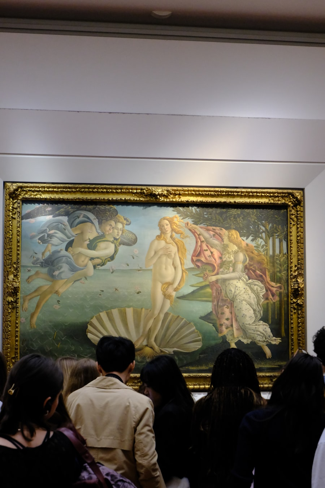
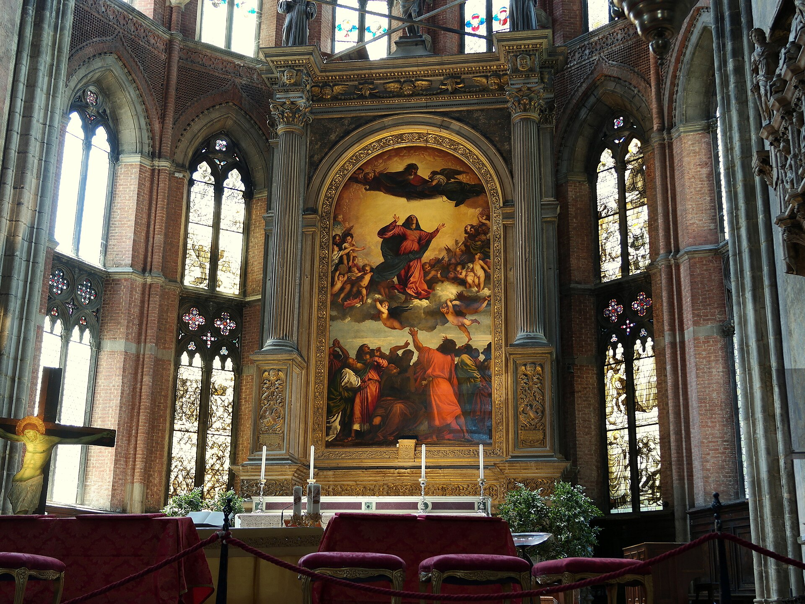

L'Arte e la Civiltà d'Italia
意大利艺术与文明之旅
从万神殿的混凝土穹顶，到西斯廷教堂的天顶画——
五座城市，53 处博物馆 · 教堂 · 古迹，一部可以走进去的历史。
五座城市
Le Città


主题之旅
I Percorsi
文艺复兴全明星
美第奇的收藏、达芬奇的实验、米开朗基罗的大理石与拉斐尔的和谐--一个天才扎堆的时代。
威尼斯画派与水城
金色马赛克、总督的权力剧场、乔尔乔内的谜题与泻湖的光。
不可错过的名作
I Capolavori

《大卫》
一块被弃置 25 年的大理石，刻成了文艺复兴的自信
佛罗伦萨 · 学院美术馆 →

《维纳斯的诞生》
女神踏贝壳而来，西方艺术最美的登场
佛罗伦萨 · 乌菲兹美术馆 →

《雅典学院》
文艺复兴的人文宣言：哲学与艺术同堂
梵蒂冈 · 梵蒂冈博物馆 →

《最后的晚餐》
一句话引爆十二使徒的心理剧
米兰 · 《最后的晚餐》 →

《阿波罗与达芙妮》
大理石变成手指与树叶的一瞬
罗马 · 博尔盖塞美术馆 →

《圣殇》Pietà
24 岁的天才，一生唯一的签名
梵蒂冈 · 圣彼得大教堂 →

《吻》
意大利统一前夜的政治浪漫
米兰 · 布雷拉美术馆 →

《暴风雨》
五百年没人说清它画的是什么
威尼斯 · 学院美术馆 →

《圣母升天》
威尼斯文艺复兴的分水岭：圣母与使徒的能量风暴
威尼斯 · 弗拉里荣耀圣母教堂 →

《圣泽诺祭坛画》
北意透视法的开山之作：画框如窗，圣徒如在
维罗纳 · 圣泽诺大教堂 →

朱丽叶的阳台
虚构爱情的实体坐标：全世界最著名的阳台
维罗纳 · 朱丽叶之家 →